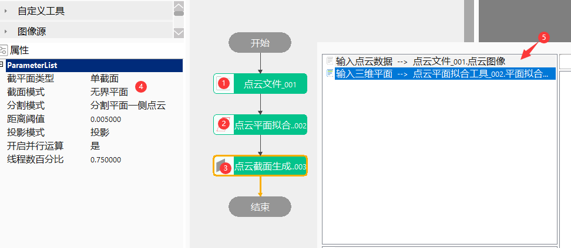
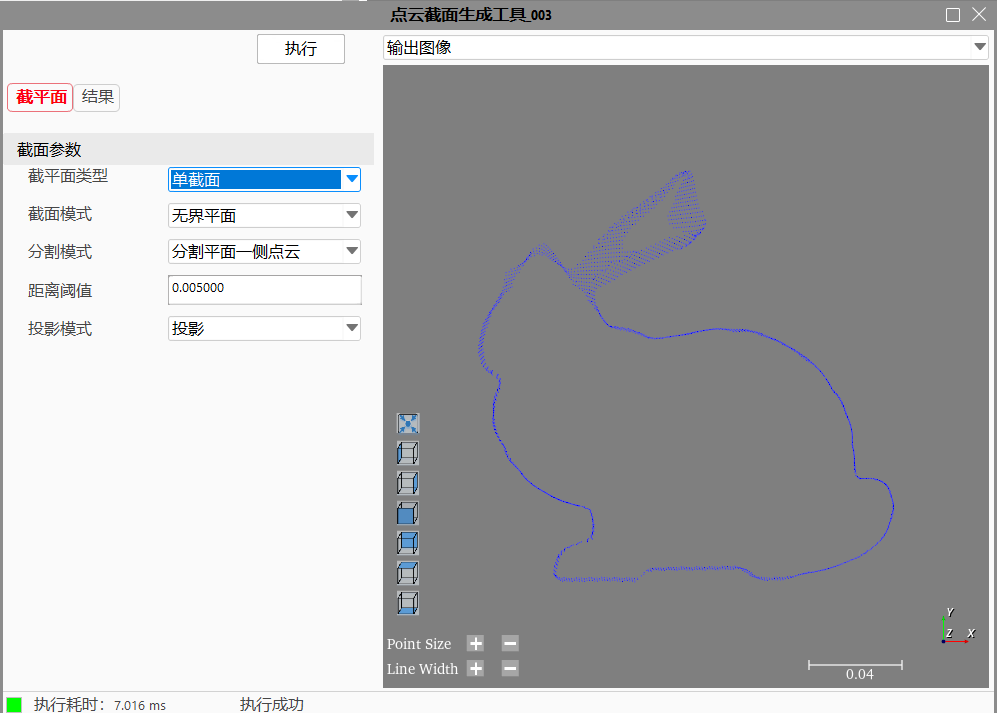
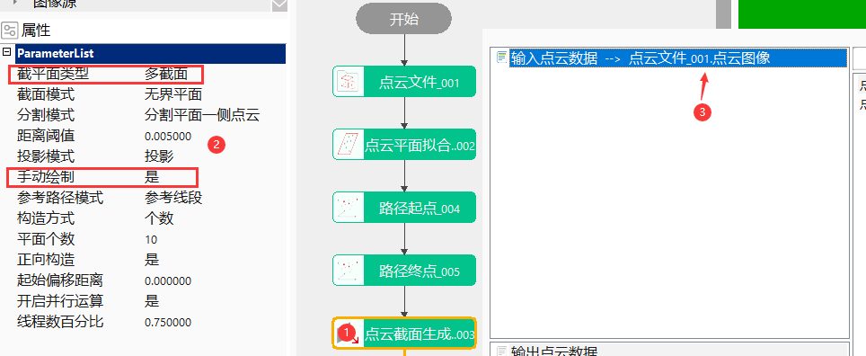
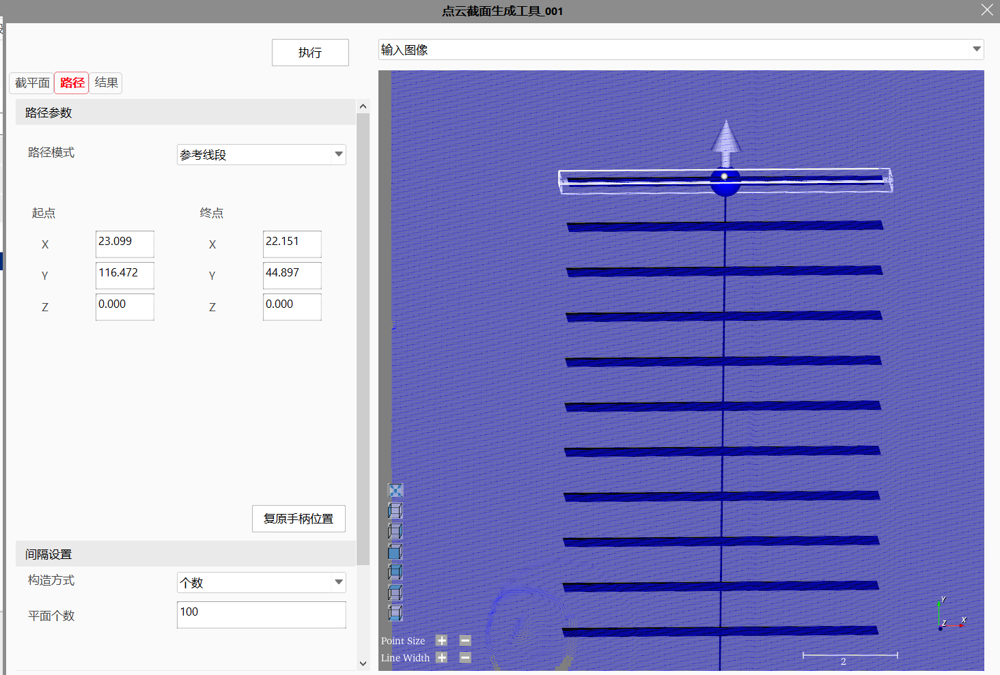
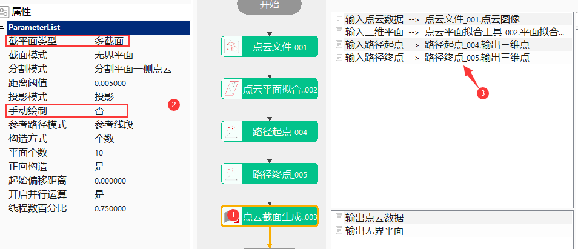

点云截面生成工具分为单截面和多截面截取轮廓，单截面根据输入平面截取轮廓，多截面按照固定路径创建一系列平面截取各个平面的轮廓。
点云截面生成工具应用于获取三维点云数据中某一确定平面的点云数据（截面数据），通过检测截面数据来判断点云数据是否存在缺陷，以降低在点云数据上的测量难度，提高测量精度。
step1：添加点云文件、平面拟合工具（或添加元素生成工具可以生成平面的工具）点云截面生成工具，并双击打开工具参数链，链接点云文件和输入平面，如图3-1所示；
step2：右击点云截面生成工具点击“属性”打开工具高级界面（或直接操作属性页），如图3-2所示，设置距离阈值，用于控制点到平面的最大距离，距离范围内的值才能生成截面数据，然后点击运行即可得到该截面上的数据；


多截面分手动绘制和非手动绘制两种模式，手动模式时可在高级界面实时绘制路径及平面参数，非手动模式需要在数据链中链接路径参数和输入平面。
step1：添加点云文件、点云截面生成工具，并双击打开工具参数链，链接点云文件，如图3-3所示；
step2：右击点云截面生成工具点击“属性”打开工具高级界面，如图3-3所示，在视图中拖拽ROI到合适位置，或者在高级界面手动修改平面或路径参数，然后点击运行即可得到路径上一系列截面上的数据；


step1：添加点云文件、点云截面生成工具，并双击打开工具参数链，链接点云文件，如图3-5所示；
step2：数据链接输入平面以及路径需要的各个参数，然后点击运行即可得到路径上一系列截面上的数据；

| 参数名称 | 参数描述 |
|---|---|
| 输入点云数据 | 输入的点云图像 |
| 输入三维平面 | 输入截取的平面，属性参数截面模式为三维平面时生效 |
| 输入三维矩形平面 | 输入截取的矩形平面，属性参数截面模式为三维矩形平面时生效 |
| 输入三维圆形平面 | 输入截取的圆形平面，属性参数截面模式为三维圆形平面时生效 |
| 输入路径起点 | 多截面模式时，路径起始点 |
| 输入路径终点 | 多截面模式时，路径结束点 |
| 输入路径三维参考圆 | 多截面模式时，圆或圆弧形状的路径 |
| 自定义偏移量 | 自定义多截面偏移距离/角度 |
| 参数名称 | 参数描述 |
|---|---|
| 截平面类型 | 分为两种：单截面和多截面 |
| 截面模式 | 分为三种：无界平面、三维矩形平面和三维圆形平面 |
| 分割模式 | 包括两种：分割平面法向量一侧点云数据和分割平面两侧点云数据 |
| 距离阈值 | 用于控制点到平面的最大距离，距离范围内的值才能生成截面数据，参数范围[0,10000] |
| 投影模式 | 主要指分割的点云是否投影到截面上，包括两种：不投影和投影 |
| 手动绘制 | 是：高级界面交互绘制路径和平面；否：数据链接链接参数生成路径和平面 |
| 参考路径模式 | 分为三种：参考线段、参考圆和参考圆弧 |
| 圆弧构造类型 | 包括两种：参考圆+起始点+终点、参考圆+起始点+圆弧跨度 |
| 跨度 | 范围(0，360) |
| 顺时针构造 | 是：顺时针构造；否：逆时针构造 |
| 构造方式 | 包括三种：个数、间隔、自定义，自定义模式时，需要通过数据链“自定义偏移量”设置偏移距离 |
| 平面个数 | 平面个数，范围[2，100] |
| 间隔距离/角度 | 间隔距离范围为（0，10000]，两平面之间距离;间隔角度范围为（0,360)，两平面之间间隔角度 |
| 正向构造 | 是：从起始点——终点构造；否：从终点——起始点构造 |
| 起始偏移距离/角度 | 起始偏移距离(参考线段)，范围为[0，10000]，离起始点偏移距离开始构造多平面；起始偏移角度,范围为[0,360)，离起始偏移角度开始生成截面 |
| 开启并行运算 | 是否开启并行运算，选择是时，算法将开启OpenMp并行计算方式，可以提升计算速度，但可能出现耗时不稳定的情况，选择否时，算法将关闭OpenMp并行计算。 |
| 线程数百分比 | 设置并行运算的线程数百分比，有效范围为 (0, 0.75]，对应表示(0%, 75%]百分比范围。 |
高级界面参数与属性窗口参数一致，交互按钮如下：
| 按钮名称 | 参数描述 |
|---|---|
| 复原手柄位置 | 按照输入点云图像特点固定摆放ROI |
| 参数名称 | 参数描述 |
|---|---|
| 输出点云数据 | 输出截面上的点云数据 |
| 输出截面数据 | 单截面时输出轮廓数据 |
| 输出截面数据数组 | 多截面时输出轮廓数据 |
| 输出无界平面 | 多截面时输出路径上的无界平面 |
| 输出三维矩形平面 | 多截面时输出路径上的矩形平面 |
| 输出三维圆形平面 | 多截面时输出路径上的圆形平面 |
| 参数名称 | 参数描述 |
|---|---|
| 输出点云数据 | 输出截面上的点云数据 |
| 输出无界平面 | 多截面时输出路径上的无界平面 |
| 输出三维矩形平面 | 多截面时输出路径上的矩形平面 |
| 输出三维圆形平面 | 多截面时输出路径上的圆形平面 |
| 执行时间 | 工具执行时间 |
| 执行结果 | 工具执行结果 |
参见“\Samples\3D\点云\点云截面生成工具.gvp”。